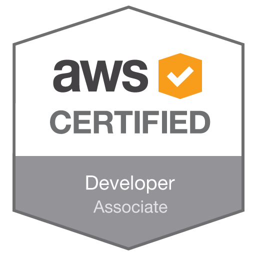
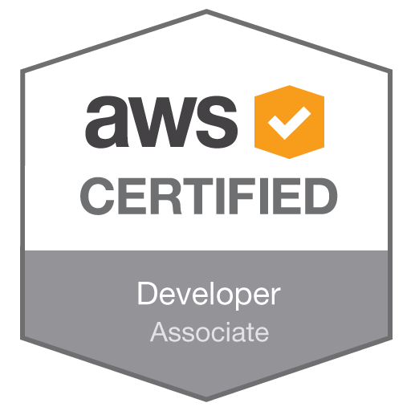

Craig Smith
Experience • Skills • Certifications • Contact
I’m a software engineer and cloud architect from Birmingham, 15 years ago I taught myself how to write HTML & CSS and published my first ever website, since then I haven’t stopped learning new technologies, building things and tinkering with code.
My career has been varied and extensive, I started of working for a handful of small digital agencies, and quickly progressed to work with Razorfish UK. After Razorfish I took a role at live music startup songkick.com, before moving into freelance consultancy around 2010.
For the past 7 years I have worked with numerous companies big and small to deliver cloud-based projects on everything from daily-deal sites, online magazines for large publishing houses, investment and banking solutions, finance products and more recently an online video monetization platform.
Experience
Technical Lead, Mobicast, Global / Remote 2016-17
Mobicast is a digital video distribution and monetization platform. My role has been to, as part of multi-national, multi-discipline “project team” help build and architect the platform. The role has been very reactive and hands-on covering everything from mobile SDK specification to serverless micro-service design and implementation.
The platform runs on AWS and is a mix of new and inherited technology spanning a mobile app, web app, video management console, a JavaScript widget library, and various third-party integrations.
Technical Lead, Folkefinans, Stockholm / Remote 2013-17
Folkefinans is a financial services company in Norway with offices across the Nordics. My role has expanded over 4 years - when I started working with the company there was myself and one other working on the customer facing web-applications.
The applications interacted with a backend .NET platform that handled CRM, Credit Scoring, KYC and various other business concerns. I’ve been involved in all the major technology decisions since starting including re-platforming the various web-apps, implementing a Mobile App & API and launching a “2nd generation” all new platform on top of AWS.
Ruby Developer, songkick.com, London 2009-10
Songkick is a live music alert and ticketing platform that includes community features. I joined Songkick’s development team whilst the product was still in private beta and seeking funding. I worked primarily on user-facing feature development as well as bug-fixing and feature planning.
I pushed for and then ended up heading a team focusing on social features, integrations and viral growth, working with Twitter, Facebook, Spotify and other networks to increase our user-base.
Lead Developer: RIA, Razorfish, London 2007-09
Razorfish is one of the world’s largest interactive agencies and has been around since the early 90s. I joined their London office as part of their developing Rich Internet Applications team in 2007.
After a few months at the agency I was fast-tracked to Lead Developer of RIA with a team of 6 developers working alongside me. I helped deliver major projects for international, household names during my time and worked closely with the numerous different departments and disciplines within Razorfish's 250+ strong team.
Other Experience
- Ruby Developer, Money Advice Service, London 2012-13
- Lead Developer, Nutmeg Finance, London / Remote 2012
- Lead Developer, Financial Times, London / Remote 2012
- Lead Ruby Developer, Make Positive, London / Remote 2011-12
- Ruby Developer, Nature Publishing, London / Remote 2011
- Ruby / Flex Developer, Financial Times, London / Remote 2011
- RIA Consultant, Fabric Worldwide, London 2011
Additional experience available on request.
Skills
Ruby / Rails / Node / MySQL / Postgres / Redis / HTML / CSS / JavaScript / SOA / API Design / Serverless / AWS / Cloud / Solutions Architecture / Agile / TDD / BDD
I like to think I can pick up most new languages, frameworks, techniques and methodologies that I may encounter working on code, so the above is by no means exhaustive.
Certifications
AWS Certified
Solutions Architect - Associate (May 2017)
Developer - Associate (June 2017)
 

Contact
Email: cv@ctsmail.me
Phone: Available on request